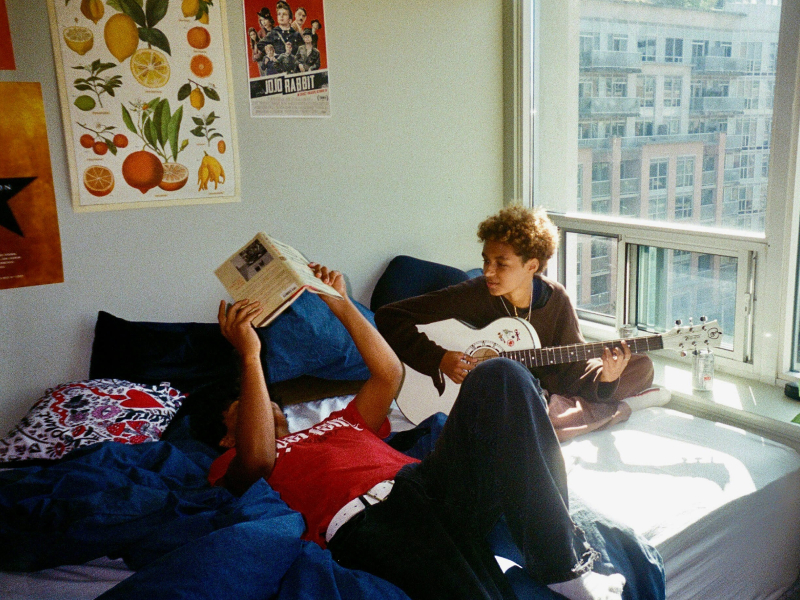

Estudo de caso — Moradia Compartilhada
Encontrar um colega de quarto no Brasil geralmente significa postar no Facebook e torcer pelo melhor.
O problema nunca foi dividir as contas, mas sim a pessoa certa para morar junto, e nenhuma plataforma foi criada para ajudar nisso.
Role — UX Designer & Researcher
VER MAIS